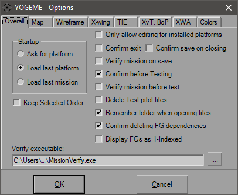
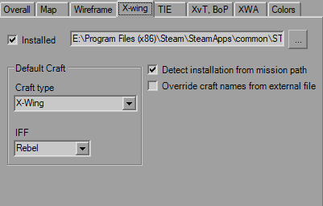
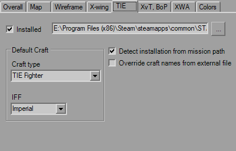
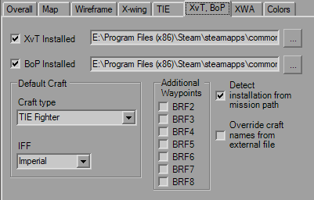

Options Dialog
When you start the Options dialog you will be greeted by the Overall tab.

This is where you control some of the defaults and global settings used in YOGEME. The defaults in mission files are defined within the Platform library file, but these override that when you start a new mission here.
This tab is for YOGEME global behaviours. The Startup panel on the left defines if you see the initial windows to select a platform (default) or launch directly into whichever platform/mission you had open last. If launching the mission doesn't work, it will try launch the last platform.
The checkboxes all default to checked. The first one will disable editing on a platform if it's not installed, since you can't test what you don't have, so I intentionally discourage you from touching it. In the event that you have none of the platforms installed, this will automatically uncheck the first time you run YOGEME and you can edit everything. YOGEME will detect normal installations as well as those on 64-bit systems up to Windows 10 using the MSI installers from Markus Egger, as well as Steam installations.
The next two boxes are your typical annoying "Are you sure you want to?" boxes that I'm betting you'll disable anyway. The Verify box and field at the bottom will decide if the mission will be run through my MissionVerify program every time you save. If you don't want this, that's fine, you can run it from the toolbar and menu whenever you want. If you have something else that you want to screen your missions, you can stick anything here you want, really. What my MissionVerify does is checks the file for common errors and other issues that can render it unplayable or unwinnable. Examples are Global Goals with "* AND FALSE" set, no player craft, mission limits exceeded (which shouldn't be an issue here), no briefing (not required, but you should), etc. It'll give you a list of warnings and errors and you can fix/ignore what you will. Made it for easy checking of missions submitted to the GE but also a good check for anyone making missions.
The three "Test" boxes pertain the 'Test' menu item. The "Confirm" box causes the confirmation dialog to appear every time to hit the menu item. The "Verify" option does pretty much the same as the "Verify mission on save" checkbox. The reason it's separate is so if you don't want to verify every single time you hit the "Save" button, but think it's a good idea to check if it's flyable before you try to fly it. If both "Verify" boxes are checked, it will only run once. The "Delete" option clears out the generated test pilot files after you quit the platform. If you decide to leave them there, future pilot files will increment (so the first is Test, next is Test1, etc).
The last two check boxes were added in v1.3. One simply uses the Recent Directory so you don't have to re-navigate to the same place repeatedly if it's not in the standard mission folder, and the other is an advanced function that checks for references to a Flightgroup during deletion. So if you delete say "X-W Red", but "Y-W Green" has arrival conditions of "100% X-W Red must be destroyed", you'll be notified of the issue.
A couple options that can be set at the Map Dialog, but set for defaults here.

Same as TIE.

The platform tabs primarily exist to control the default new FlightGroup and the platform installation directory. You can fake platform installations if you have the appropriate support files in the correct directory structure at this location (like BATTLE#.LFD files and the required files to support the galaxy image). If you do this, YOGEME will not be able to auto-detect the fake install should your settings be reset.
If you are using a custom shiplist, they will also be reflected here.

Same as TIE, but adds in the additional briefing waypoints you can activate by default.
Nothing special, move along.
New in v1.5, this enables FG coloring in the dwop-downs, as well as the coloring for the clickable labels (orders/triggers). If you've got a Windows color scheme that makes it hard to see, you can fiddle with it here. The predefined options lets you quickly revert to the original or to Troy Dangerfield's standard colors.